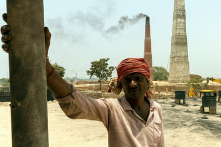
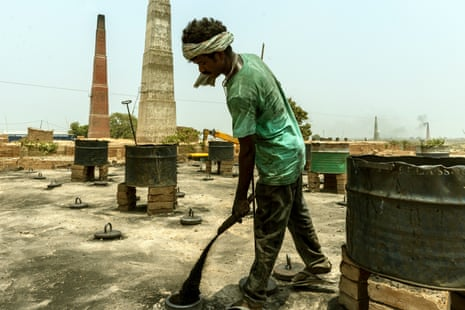
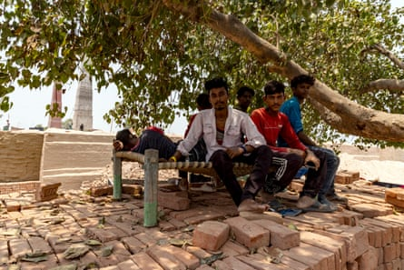
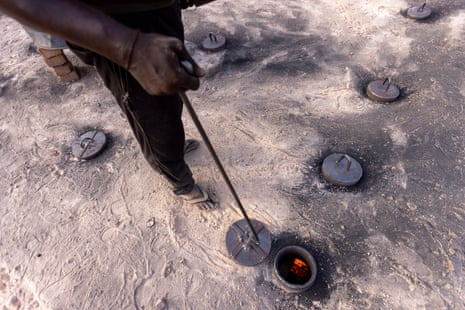
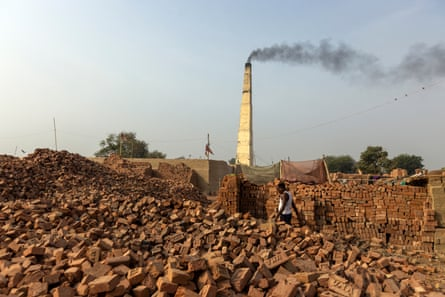
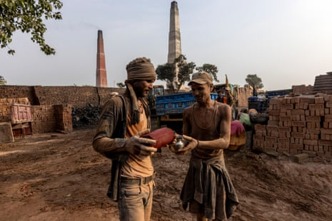
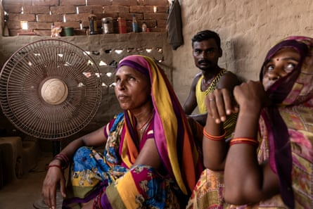
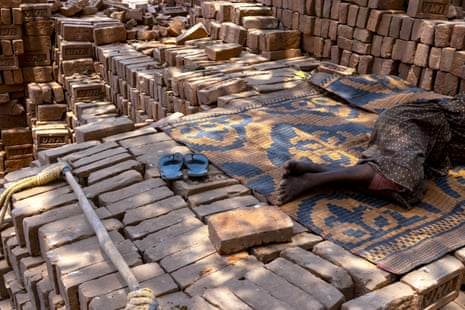

“I work with fire. But this has been the hottest ever, even for me,” says Harilal Rajput, squinting in the blazing midday sun. Rajput, 41, is a chief fire worker at a brick kiln near the town of Danapur on the outskirts of Patna, capital of the eastern state of Bihar. He is a migrant worker; his wife, a farmer, lives in neighbouring Uttar Pradesh with their three children.
It is almost 1pm on a June afternoon and neither Rajput nor the nine fire workers he supervises have had any food since the previous night. They will eat only when their eight-hour shift ends at about 4pm. His team, he says, is “running on water”.
Tying a cotton cloth on their heads and keeping a bucket of water handy to hydrate occasionally are some of the many precautions kiln workers take to cope with heat exhaustion.
Harilal Rajput, a chief fire worker, says on top of the kiln where he works feels twice as hot as the atmospheric temperature.
When the Guardian visits the kiln in the middle of India’s longest ever heatwave , Patna clocks 42.2C (108F). But Rajput says it feels twice as hot on top of the kiln where he works, adding coal to a small brick firing zone of 35 neatly arranged holes.
“I often feel dizzy, my throat goes dry and I shiver as my body heats up, but our firing work cannot stop,” he says.
The kilns close during the monsoon season from late June to November, but this month they will be reignited and the brick firing will begin again. For the 200 days or so of the 2024-25 dry brick making season, firemen such as Rajput will feed coal into the kiln every 10 minutes, a gruelling job that is even more taxing on hot days.
Rajput is one of an estimated 15 million workers employed by about 140,000 brick kilns in the country. India is the world’s second -largest brick producer, after China . The sector is not organised and is under-regulated. It offers seasonal employment to informal workers, mostly migrants, and often sees cases of bonded labour. Bihar has about 7,700 brick kilns with an annual production of more than 20bn bricks.
Lalu Gadhi, 22 a migrant worker from Jharkhand pours coal dust into a kiln.
Kiln workers, who almost always work and live on the same premises, face the double blow of rising atmospheric temperatures and high heat that radiates from the furnace. During the hot season, kiln workers reported symptoms of “heat strain, reduced productivity, and impacts on daily life”, according to a 2015 study .
Ram Pravesh Manjhi, a 35-year-old brick moulder at the same kiln as Rajput, says that day and night feel equally hot for him. “In winter, we can work for almost the whole day but right now [in June] even a few hours in daytime are exhausting.” At his kiln almost all the work is suspended during the hottest hours of the day – but not the firing.
I ndia’s 2024 summer was particularly harsh, with the country experiencing the longest heatwave on record. Bihar was one of the northern states that bore the brunt of the extreme temperatures, with more than a dozen deaths from suspected heatstroke as schools were forced to close .
And it is going to get worse. Heatwaves in India are projected to become more intense , last longer and occur at a higher frequency and earlier in the year, and the northern states, including Bihar – which have the highest concentration of brick kilns, themselves a contributor to rising temperatures – will see the most brutal temperatures.
Migrant workers from Uttar Pradesh rest in the shade of the only banyan tree at their worksite in Danapur, on the outskirts of Patna city.
New research by the Rights Lab at the University of Nottingham in England shows that brick kiln workers are among the most vulnerable to human-caused global heating . Researchers mapped more than 48,000 brick kilns across India using satellite data then overlaid climate models on to the geolocations of the kilns to forecast the number of days of extreme heat that kiln workers would endure between now and 2050.
Predictions of the risk of future heat stress in brick kilns were made using the wet-bulb globe temperature (WBGT) measure , which combines dry air temperature (as you’d see on a thermometer) with humidity, sun angle and wind levels. A WBGT of more than 30C is defined as moderate heat stress and 34C is extreme heat stress. According to the US National Weather Service , if WBGT exceeds 32.2C working or exercising in direct sunlight will stress your body after just 15 minutes.
Prof Doreen Boyd, associate director of the Rights Lab, says: “This study measures the future risk of heat stress in the brick kilns across all of India, at scales never previously possible, to 2050 – showing that it’s possible to predict and prepare for threats to decent work using new data and methods.” Decent work is defined by the International Labour Organization as “productive work … in conditions of freedom, equity, security and human dignity”.
A worker fires the kiln by pouring powdered coal through small holes that dot the roof of the kiln.
Forecasts were made based on three possible scenarios: the first is marked by low emissions, clean technologies, strong global cooperation and a consumption focus on sustainability; the second by moderate emissions, regional competition and mixed efforts in climate action; and the third by high emissions, fossil-fuel reliance and no or limited climate action.
The study, published in Sustainable Development journal , shows that by 2050, even in the most optimistic scenario, people will be working in hotter temperatures at the majority of kilns.
Workers at more than 40% of kilns (more than 19,000) will face more than 50 days (about one in four) of WBGT above 30C, or moderate heat stress during the brick-making season. Some kilns will see WBGT above 30C for at least 100 days. Locations in northern states of India , including Bihar, are modelled to have a significant increase in days with extreme heat, above 34C.
Most kiln workers are paid piecemeal so may be reluctant to take breaks for fear of losing pay, making them particularly vulnerable to heatstroke, dehydration and long-term disease. Boyd hopes that highlighting these risks in the research and creating an online training module will lead to a discussion among policymakers and employers about workers’ rights, including improved conditions and a fairer payment system.
A man walks past a pile of bricks at the Uma Brick Kiln. At night when its too hot to sleep indoors, workers put their mosquito nets and bedding on top of the brick piles to serve as beds.
“There is an urgent need for the kiln industry and government labour and environmental inspectorates to understand and design comprehensive labour policies and workplace interventions to avert health risks for these millions of workers in the 48,000-plus kilns,” says the study, which was supported by the UK government’s Modern Slavery Innovation Fund.
S hiv Narayan, 22, is a recent graduate from Madhya Pradesh, who ended up working at the Danapur kiln after being unable to find other work to support his family, who were struggling to pay debts. Most of his co-workers come from similar poverty-stricken backgrounds.
“Anyone you meet here is poor, but we work here because there is no other choice,” he says.
Narayan says working in extreme heat conditions has made him “hot headed”, literally. He says he snaps at people during his daily routine, which he regrets later. Despite the exhausting heat, Narayan and other workers say they are against curtailing work days as it would mean loss of pay.
The kiln is unusual because it hires people on a set monthly wage, with most workers earning an average of 14,000 rupees (£130) a month. Rajput earns more because he also recruits workers.
Baldev Prasad, the kiln owner, says he prioritises safety and fair wages. Workers here say they have access to clean drinking water, bathrooms, electricity in their accommodation, regular water spraying to cool the ground and access to medical aid.
Workers take a water break after loading bricks into the kiln for firing.
“Heat impacts worker productivity but we want them to stay on. So, we make sure we take all necessary steps to ensure their convenience. This includes the decision to halt all activities other than the firing work during peak hot hours of the day,” says Prasad, who has been running his kiln for more than 25 years.
Nivit Kumar Yadav of the Centre for Science and Environment in Delhi says not much is being done on the ground right now, but in the long term, an adaptation plan is necessary. “An average kiln worker is trained to deal with the heat that is coming from below [furnace] but not with the heat that is coming from above [atmospheric],” he says.
Shorter work shifts, artificial shade and green cover are some of the steps that can be taken, he says.
Sunita Sonkar, left, and Kiran Sonkar, right, take a break in their accommodation at the kiln site.
The Rights Lab study also calls for “self-pacing, hydration, adequate shade areas, work-rest regimes and mechanisation” to protect workers from the rising heat. It says projected heat stress and reduced labour productivity in the coming decades could increase the vulnerability of an already precarious workforce.
Back at the kiln, heat is on the minds of all the workers. Kiran Sonkar, a 27-year-old loader, is taking an afternoon break at the kiln accommodation. She says on hot summer days, she is grateful for two things: the fan in her room and a big banyan tree on the kiln premises. “The temperature is increasing. No one can stop the hot weather that is upon us.”
However, not everyone at the kiln is lucky enough to get an afternoon break. Rajput continues to fire coal as his shift nears its end.
“With every passing year, it is getting hotter and hotter,” he says. “If you work at a kiln, there is no way to escape fire. But there should be ways to escape the summer heat.”
A worker rests on a mat on top of bricks in the shade of a tree.